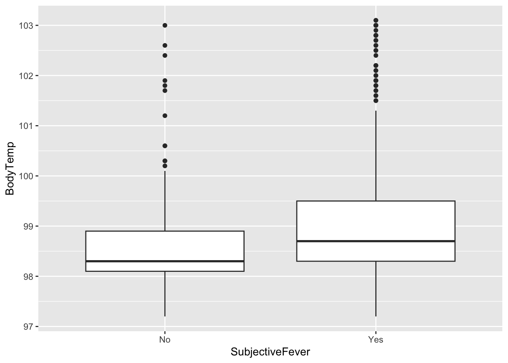

Produce and Print a Summary Table for both Body Temperature and Nausea
Summary Stats
summary(d$BodyTemp)
Min. 1st Qu. Median Mean 3rd Qu. Max.
97.20 98.20 98.50 98.94 99.30 103.10
summary(d$Nausea)
No Yes
475 255
Summary of full data set
tab<-tbl_summary(d)tab
Characteristic
N = 7301
Swollen Lymph Nodes
312 (43%)
Chest Congestion
407 (56%)
Chills/Sweats
600 (82%)
Nasal Congestion
563 (77%)
Sneeze
391 (54%)
Fatigue
666 (91%)
Subjective Fever
500 (68%)
Headache
615 (84%)
Weakness
None
49 (6.7%)
Mild
223 (31%)
Moderate
338 (46%)
Severe
120 (16%)
Cough Severity
None
47 (6.4%)
Mild
154 (21%)
Moderate
357 (49%)
Severe
172 (24%)
Myalgia
None
79 (11%)
Mild
213 (29%)
Moderate
325 (45%)
Severe
113 (15%)
Runny Nose
519 (71%)
Abdominal Pain
91 (12%)
Chest Pain
233 (32%)
Diarrhea
99 (14%)
Eye Pain
113 (15%)
Sleeplessness
415 (57%)
Itchy Eyes
179 (25%)
Nausea
255 (35%)
Ear Pain
162 (22%)
Sore Throat
611 (84%)
Breathlessness
294 (40%)
Tooth Pain
165 (23%)
Vomiting
78 (11%)
Wheezing
220 (30%)
BodyTemp
98.50 (98.20, 99.30)
1 n (%); Median (IQR)
Create Histogram for Body Temperature
d %>%ggplot()+geom_histogram(aes(x = BodyTemp))
`stat_bin()` using `bins = 30`. Pick better value with `binwidth`.
A majority of the body temperatures fall between 98-99°F
Let’s look at Predictor Variables for our outcomes of interest (Body Temperature and Nausea)
Body Temperature
Weakness and Body Temp
d %>%ggplot()+geom_boxplot(aes(x= Weakness,y = BodyTemp))
Chills and Sweats and Body Temp
d %>%ggplot()+geom_boxplot(aes(x= ChillsSweats,y = BodyTemp))
Fatigue and Body Temp
d %>%ggplot()+geom_boxplot(aes(x= Fatigue,y = BodyTemp))
Fever and Body Temp
d %>%ggplot()+geom_boxplot(aes(x= SubjectiveFever,y = BodyTemp))

On average, it looks like those that experienced severe weakness symptoms, chills and sweats, fatigue, and fever had higher body temperatures. We would expect to see this positive relationship in the latter- so fever will be our main predictor of interest for Body Temperature.
Now let’s look at some predictor variables for the categorical variable (Nausea)
Diarrhea and Nausea
d %>%ggplot() +geom_count(aes(x = Nausea,y = Fatigue))
Chills and Nausea
d %>%ggplot() +geom_count(aes(x = Nausea,y = ChillsSweats))
Fatigue and Nausea
d %>%ggplot() +geom_count(aes(x = Nausea,y = Fatigue))
Fever and Nausea
d %>%ggplot() +geom_count(aes(x = Nausea,y = SubjectiveFever))
Fever, Fatigue, Chills, and Diarrhea all appear to have equal or no major positive relationship (Where x:nausea = Yes-Yes < Yes-No). Vomiting will be our predictor of interest for the categorical outcome (Nausea), as there was a large proportion that did not experience either Nausea or Vomiting, and a medium-proportion of those that experienced one symptom with the other.